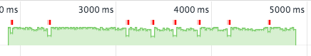
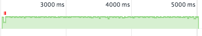
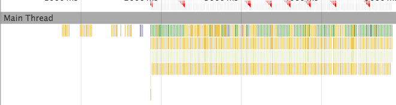
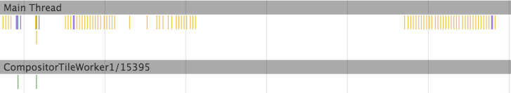
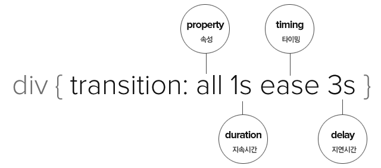
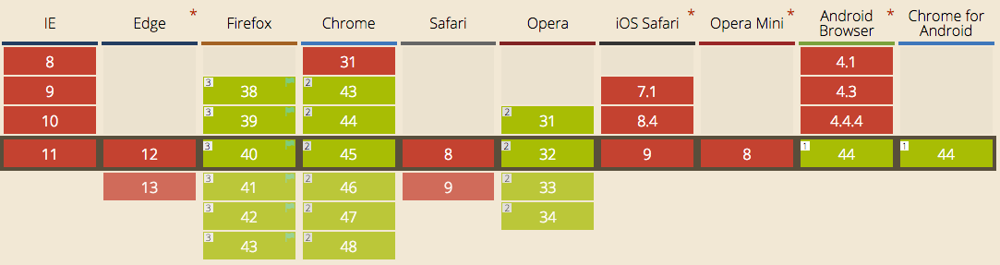

HTML5 Web Animation
Created by 손찬욱 / chanuk.son
HTML5 이전의 애니메이션
setTimeout, setInterval
느리다
setTimeout은 main Thread의 작업에 영향을 받는다.
구현하기가 복잡하고, 어렵다
function animate(el, x, y, duration) {
var startTime = Date.now();
var now, per;
(function loop() {
now = Date.now();
if (now >= startTime + duration) {
// animation 종료 시점 (loop 종료 시점)
el.style.transform = "translate3d(" + x + "px," + y + "px,0)";
return;
}
per = (now - startTime) / duration;
// animation 진행. easing 처리
el.style.transform = "translate3d(" + (x * per) + "px," + (y * per) + "px,0)";
// loop 재호출
setTimeout(loop, 16);
})();
}
HTML5 애니메이션 기술
| 구분 | 기술 |
|---|---|
| Javascript | requestAnimationFrame |
| CSS | CSS Transition |
| CSS | CSS Animation |
| SVG | SVG Animation |
빠르다
requestAnimationFrame는 setTimeout과 사용법은
동일하지만 60 fps를 보장한다.
빠르다
CSS 는 별도의 thread를 이용하기 때문에 빠르다.
 간단하다
CSS Transition을 이용하면 간단히 구현할수 있다.

.transition { transition: margin-left 1s linear, background-color 2s ease 1s; }
div.exampletransition:hover div.transition {
margin-left: 700px;
background-color: green;
}
제어할수 있다.
CSS Animation을 이용하면 애니메이션 진행상태를 제어할수 있다.
하지만,
HTML5 애니메이션 기술들을
효과적으로 쉽게 제어하기는 어렵다.
그래서 나왔다. 애니메이션의 종합판!
Web Animation API
Web Animation API
통합된 애니메이션 제어 모델을 제공하기 위한 자바스크립트 API

Web Animation API
기존 애니메이션 모델들에 대해 동기화된 공용 Javascript API를 제공
기존 애니메이션 규격에서 처리하기 어려운 부분들을 보완
Web Animation API 주요 기능
- 애니메이션의 재생방법의 제어
- 애니메이션의 동시적 수행의 조합
- 애니메이션의 순차적 수행의 조합
- SVG 패스를 이용한 애니메이션 구현
Animation Basic
Web Animation API Spec-1
Element.animate()
Animation = Element.animate(Keyframes, duration)
var player = document.getElementById("box").animate([
{ transform: 'scale(1)', opacity: 1},
{ transform: 'scale(.5)', opacity: .5},
{ transform: 'scale(.667)', opacity: .667},
{ transform: 'scale(.6)', opacity: .6}
], 3000);
Element.animate()
Animation=Element.animate(Keyframes, AnimationEffectTiming)
offset을 이용하여 animation의 중간 단계를 지정할수 있다.
var player = document.getElementById("box").animate([
{ offset: 0, transform: 'scale(1)', opacity: 1 },
{ offset: .3. transform: 'scale(.5)', opacity: .5 },
{ offset: .7875, transform: 'scale(.667)', opacity: .667 },
{ offset: 1, transform: 'scale(.6)', opacity: .6 }
], {
duration: 700, //milliseconds
easing: 'ease-in-out', //'linear', a bezier curve, etc.
delay: 10, //milliseconds
endDelay: 0, //milliseconds
iterationStart : 0, //
iterations: Infinity, //or a number
direction: 'alternate', //'normal', 'reverse', etc.
fill: 'forwards' //'backwards', 'both', 'none', 'auto'
});
Animation 객체
http://www.w3.org/TR/web-animations/#the-animation-interface
[Constructor (optional AnimationEffectReadOnly? effect = null,
optional AnimationTimeline? timeline = null)]
interface Animation {
attribute AnimationEffectReadOnly effect;
attribute AnimationTimeline timeline;
attribute double startTime;
attribute double currentTime;
attribute double playbackRate;
readonly attribute AnimationPlayState playState;
readonly attribute Promise Animation ready;
readonly attribute Promise Animation finished;
void cancel ();
void finish ();
void play ();
void pause ();
void reverse ();
};
enum AnimationPlayState { "idle", "pending", "running", "paused", "finished" };
Animation 객체 (Demo)
Promise
Web Animation은 ready와 finished promise를 지원한다.
Promise (Demo)
Timeline 객체
http://www.w3.org/TR/web-animations/#animationtimeline
interface AnimationTimeline {
readonly attribute double currentTime;
sequence Animation getAnimations();
};
[Constructor (DOMHighResTimeStamp originTime)]
interface DocumentTimeline : AnimationTimeline {
};
Timeline 객체 (Demo)
Multiple Animation
Web Animation API Spec-2
Multiple Animation
다수 엘리먼트의 애니메이션을 제어
KeyframeEffects
Element.animation과 유사하나, 선언시 바로 실행되지 않는다.
var effect = new KeyframeEffect(document.getElementById("box"),
[
{ opacity: 1 },
{ opacity: 0 }
], {
duration: 1000,
fill: 'both'
});
document.timeline.play(effect);
GroupEffects
Group 단위로 애니메이션을 제어할수 있다.
Keyframe/Group/SequenceEffect를 포함할 수 있다.
var kEffects = [
new KeyframeEffect(elem, keyframes, timings),
new KeyframeEffect(elem2, keyframes, timings),
new KeyframeEffect(elem2, keyframes, timings)
];
var group = new GroupEffect(kEffects);
document.timeline.play(group);
SequenceEffect
순차적 애니메이션의 조합
var kEffects = [
new KeyframeEffect(elem, keyframes, timings),
new KeyframeEffect(elem2, keyframes, timings),
new KeyframeEffect(elem2, keyframes, timings)
];
var sequence = new SequenceEffect(kEffects);
document.timeline.play(sequence);
GroupEffects과 SequenceEffect (Demo)
Motion Path
Motion path를 따라가는 animation
motion-path
#motioner {
motion-path: path("M200 200 S 200.5 200.1 348.7 184.4z");
}
motion-offset
var m = document.getElementById('motioner');
m.animate([
{ motionOffset: 0 },
{ motionOffset: '100%' }
], 1000);
브라우저 지원 범위
 http://caniuse.com/#feat=web-animationweb-animations-js polifil
https://github.com/web-animations/web-animations-js